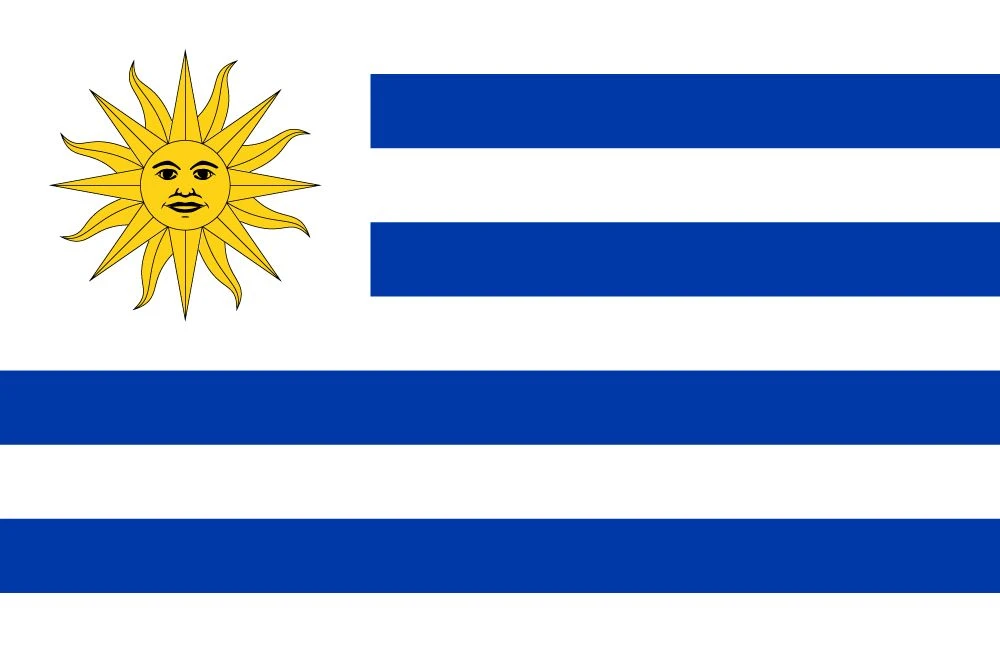
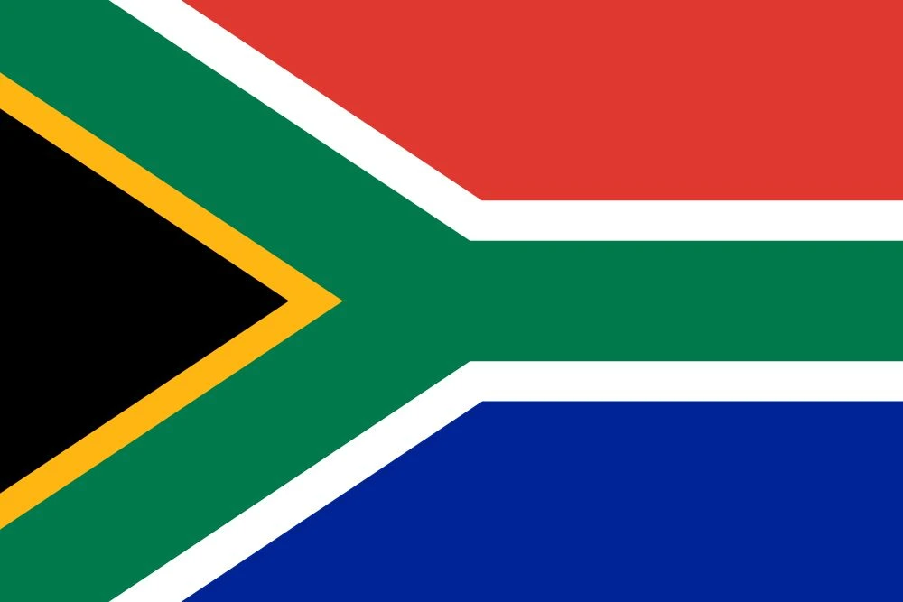

1. Spain’s Tiki-Taka Triumph: The Masterpiece of 2010
July 11, 2010. Soccer City, Johannesburg. A sea of red and yellow fills the stands as 84,490 fans hold their breath, waiting for the crescendo that would crown a new World Cup champion. On the field, two European heavyweights are set to clash in a final that will define a generation of football: Spain, the team known for their intricate tiki-taka style, and the Netherlands, who had never before tasted World Cup glory. As the two teams lined up, the narrative was clear. Spain were the favorites, but the Dutch, with their high pressing and determined style, were not to be underestimated.
This was Spain’s moment, but the journey to the final had been anything but smooth. Their opening match was a shock, a 1-0 loss to Switzerland—a jolt that sent a ripple of doubt through the team and their supporters. But Spain, as they had done throughout their Euro 2008 triumph, steadied themselves. They regrouped and quickly got back on track, with David Villa scoring a brace in a 2-0 win over Honduras. The turning point came against Chile in their final group match, where Villa’s deadly finish and the team's trademark passing style gave them a 2-1 win, propelling Spain to the knockout rounds.
The road to the final was not without its challenges. In the Round of 16, Spain faced Portugal, and though they dominated possession, it was Villa’s solitary strike that saw them through 1-0. The quarterfinals brought another nail-biter—this time against Paraguay, where Villa scored the decisive goal in the 85th minute. Then, in the semifinals, a header from Carles Puyol against Germany ensured that Spain would finally reach the pinnacle of world football, but their task was far from over. Spain had played their way to this moment—six wins, one loss, and eight goals—but now they had to prove they were worthy of the crown.
The final was a brutal affair. The Dutch, often criticized for their aggressive play, were more physical than ever, a strategy that saw Arjen Robben denied twice by the legendary Iker Casillas. Spain’s tiki-taka style, so sublime in its precision, was stifled at times by a relentless Dutch press. Despite the pressure, Spain kept their composure, sticking to their intricate passing game, knowing that one moment of magic could win it all. That moment arrived in the 116th minute of extra time.
Cesc Fàbregas, cool and composed, threaded a perfect ball through the Dutch defense. Andrés Iniesta, who had been simmering throughout the tournament, latched onto it. One touch, a volley, and the ball was past Maarten Stekelenburg and into the back of the net. 1-0. The stadium erupted as Iniesta peeled off his shirt, eyes filled with emotion. This goal was not just for the victory, but for his late friend Dani Jarque, a tribute that touched the hearts of fans around the world.
The vuvuzelas echoed through the stadium, but the Spanish players barely noticed. This was their moment. Their tiki-taka, the passing rhythm that had captivated the world, had delivered them the World Cup. Villa’s fire, Puyol’s leap, Iniesta’s dagger—it was all there, a perfect storm of footballing brilliance. "For the nation," Iniesta roared, his shirt held high as his teammates swarmed him.
Spain’s triumph was not just a victory; it was a statement. For years, they had been known for their beautiful, intricate football, but now, they had the ultimate prize to back it up. Their tiki-taka had triumphed, and the world had witnessed the beauty of their play. Xavi, the orchestrator of it all, couldn’t contain his pride: “We danced,” he said, knowing that Spain’s style had not only brought them success but had also rewritten the narrative of modern football.
Jo’burg was a fiesta that night—Spain’s first World Cup, and the country would never forget it. The Netherlands, despite their incredible journey, were left to mourn what could have been. "We had it," Robben lamented, the pain of coming so close to glory etched on his face. But for Spain, this was the moment they had dreamed of, and it would be remembered as one of the greatest footballing stories of all time. The tiki-taka revolution had been crowned.
As the Spanish fans celebrated in the streets, their victory was more than just a win on the field—it was a triumph of style, of patience, and of belief. The vuvuzelas blared into the night, marking the end of a World Cup that had seen Spain finally fulfill their potential and seize the glory that had long eluded them. For Iniesta, Xavi, Villa, and the rest of La Roja, the journey had been long, but the reward was sweeter than they could have ever imagined. The tiki-taka kings had arrived.

2. Iniesta’s Dagger in the Dark: The Moment That Defined Spain
Soccer City, Johannesburg. July 11, 2010. The final of the World Cup, and for 84,490 fans, the dream was about to unfold. The Netherlands were in search of their first-ever World Cup, while Spain, playing their iconic tiki-taka football, had reached the summit of the tournament. It was a match that would be remembered forever, not just for the result, but for the single moment that defined the tournament.
Andrés Iniesta had been simmering throughout the tournament, a quiet force in the Spanish midfield. While David Villa grabbed the headlines with his goals, Iniesta had been the heartbeat of the Spanish attack, his vision and technical ability constantly opening doors for his teammates. From the very beginning of the World Cup, Iniesta had been present—his 35th-minute strike against Chile stood as a testament to his quality. But as the final approached, the question was not if Iniesta would play a role, but when he would step up and seize the moment.
The final was anything but easy. The Netherlands, under the guidance of Bert van Marwijk, had proven their strength throughout the tournament. With Wesley Sneijder and Arjen Robben in top form, they had become one of the most formidable teams in the competition. However, their aggressive tactics and rough play were met with resistance from Spain, who stuck to their passing game, determined to impose their style on the match.
As the game wore on, it became clear that Spain's tiki-taka would struggle to break down the Dutch defense. Robben had two golden opportunities to score but was denied by the brilliance of Iker Casillas. Despite their dominance in possession, Spain found it difficult to crack the Dutch defense. It seemed as though the match was heading for a penalty shootout, but as extra time loomed, one man had other ideas.
In the 116th minute, Spain's moment arrived. Cesc Fàbregas, calm under pressure, threaded a perfectly weighted ball through the Dutch defense. Iniesta, ever alert, made a darting run into the box. The ball arrived at his feet, and in an instant, the world held its breath. One touch to control, another to volley, and the ball flew past Maarten Stekelenburg. 1-0. Spain had done it. Iniesta had done it.
His celebration was not just for the goal. It was for Dani Jarque, his late friend and teammate, to whom he dedicated the goal with an emotional tribute. Iniesta’s shirtless run became one of the most iconic images of the World Cup, and for Spain, this moment would be forever etched in their history. The dagger in the dark had struck.
The vuvuzelas blared, the fans roared, and Spain had their first World Cup title. The Dutch, despite all their effort, were left heartbroken. "We had it," Robben said, his voice thick with the pain of coming so close. But Spain’s triumph was undeniable, and Iniesta’s goal would forever be the defining moment of their journey. It was the culmination of years of hard work, of a team playing the most beautiful football in the world, and it had brought them the ultimate prize.
As the players celebrated, it was clear that this was more than just a victory. It was a statement. Iniesta’s goal was the perfect embodiment of the Spanish style—cool, calm, and clinical. The tiki-taka philosophy, which had brought them so much joy, had delivered once again. Spain were the champions of the world, and Iniesta’s dagger in the dark had written his name into the history books.
3. Netherlands’ Orange Heartbreak: A Tale of Near Glory
The 2010 World Cup final was more than just a football match—it was a story of near glory, of dreams dashed at the final moment. For the Netherlands, the road to the final had been nothing short of extraordinary. A team built on resilience, discipline, and skill, they had fought their way through a tough group, navigated a tricky knockout stage, and come out on top in a semi-final against Uruguay that had seen them dig deep into their reserves. Now, they stood just 90 minutes away from their first-ever World Cup victory.
Bert van Marwijk’s side had been flying throughout the tournament. In the group stage, they dispatched Denmark 2-0, with Wesley Sneijder’s precise finish setting the tone. A 1-0 win over Japan followed, Sneijder again the architect of the victory. Against Cameroon, a 2-1 win sealed their passage into the knockout rounds. From there, their journey was marked by decisive moments—Robben’s brilliant strike against Slovakia, Sneijder’s brace that toppled Brazil, and Giovanni van Bronckhorst’s thunderous long-range goal against Uruguay in the semi-finals.
But now, in the final, they faced Spain. The Spanish tiki-taka was in full swing, and though the Netherlands were known for their aggressive play, they knew they would have to be at their best to dethrone the world’s finest passing team.
The match began as a tense affair, with both teams trying to assert themselves. Spain’s tiki-taka was smooth, flowing, and persistent, while the Netherlands looked to counter, using their directness and speed to break down the Spanish defense. But in a game that was slowly slipping into the realm of frustration for the Dutch, there were moments of hope. Arjen Robben, perhaps the Netherlands’ most dangerous player, found himself in two glorious positions to give his team the lead. But both times, Iker Casillas, Spain’s legendary goalkeeper, was equal to the task, making crucial saves to deny the Dutch.
As the game stretched into extra time, it seemed as though the Netherlands would have to settle for the unthinkable—another World Cup final defeat. But then, in the 116th minute, Spain struck. Cesc Fàbregas’s perfectly weighted ball was latched onto by Andrés Iniesta, who, with composure and precision, volleyed the ball past Maarten Stekelenburg. 1-0. The Dutch dreams of glory had been crushed.
For the Netherlands, it was heartbreak. “We had it,” Robben said, his words filled with anguish. They had come so close, but in the end, Spain’s brilliance and the timing of their strike proved too much. The Dutch had given it their all, but the World Cup had slipped through their fingers once again.
The heartbreak was palpable. The Orange faithful, who had hoped to see their team rise to the top of the world, were left with the bitter taste of near-miss after another. For van Persie, van Bronckhorst, Sneijder, and Robben, it was a feeling they would never forget. Despite their incredible efforts, the glory had eluded them.
As the Spanish players celebrated their triumph, the Netherlands could only watch as their dreams slipped away. But for the Dutch, this final would serve as a reminder of the fine line between glory and heartbreak—a line they would continue to chase, as they always have.

4. Germany’s Young Guns Explode
July 10, 2010, Port Elizabeth—36,254 fans buzzing with excitement as Germany take on Uruguay for third place in the 2010 World Cup. Joachim Löw’s squad, made up of dynamic young talent, have lit up South Africa with their high-octane football. In the group stage, they breezed past Australia 4-0, Thomas Müller’s presence electrifying the pitch. A shock 1-0 loss to Serbia was a wake-up call, but they swiftly regained their momentum, with a solid 1-0 win over Ghana and Mesut Özil’s defining beauty of a goal. By the knockout rounds, the machine was well-oiled. They thrashed England 4-1 in the Round of 16 with Müller grabbing a brace. In the quarters, they sent Argentina packing with an emphatic 4-0 victory—Müller’s lethal finishing, Lionel Messi completely neutralized. But it was in the semifinals that Spain, with Carles Puyol’s towering header, brought their dreams crashing down in a 1-0 loss. Still, with five wins, one loss, and 16 goals, Germany were undoubtedly the team of the tournament.
Uruguay’s match was a wild ride. The Germans surged ahead in the 3rd minute with Müller, but Uruguay’s Edinson Cavani pulled them level at 28 minutes. By the 51st minute, Diego Forlán put Uruguay up 2-1 with a stunning volley, but Germany weren’t done. Marcel Jansen equalized in the 56th minute, and Sami Khedira’s header at 82 minutes sealed a 3-2 win for Germany. Müller’s fifth goal earned him the Golden Boot, a well-deserved recognition of his brilliant tournament. The pubs were filled with chatter, England’s painful loss, Argentina’s humiliation, and Germany’s youthful vibrance shining through as they sealed third place.
The buzz around Port Elizabeth was undeniable—Germany were a force for the future, and Löw’s new generation had arrived. As Khedira shouted, “For the fans!” it was clear that this team was no fluke. Their brand of football was bold, fast, and thrilling. “We lit it up,” Müller roared, as the faithful cheered on their side. Germany’s young guns weren’t just here to play—they were here to stay.
It’s a victory that will resonate in German football for years to come. “Our spark,” Müller said, and indeed, it was a spark that lit up the world. South Africa witnessed the birth of a new wave in German football, one that would take the game by storm in the coming years. From England’s collapse to Argentina’s humiliation, this was a summer that burned bright with promise for the future.
"Bold," Xavi said, his words a fitting tribute to this young side's fire. It was a tale that had the perfect ending—Germany’s youthful energy, their fearless spirit, and their relentless pursuit of success. It’s not just a bronze medal; it’s the first chapter of a new era in German football.

5. Suarez’s Hand of Chaos
July 2, 2010, Soccer City—84,017 fans on the edge of their seats as Uruguay take on Ghana in the World Cup quarterfinals. Luis Suárez is the heartbeat of Uruguay’s attack, the embodiment of their fighting spirit. It’s been a tournament of high drama, with Suárez’s name already making waves. In the group stage, Uruguay eased to a 3-0 win over South Africa, Diego Forlán’s brace setting the tone. A 1-0 win over Mexico followed, with Suárez’s header the difference. A frustrating 0-0 draw against France didn’t deter them. In the knockout rounds, they edged past South Korea 2-1, with Suárez scoring a sublime curler. And now, the quarterfinal—this was the moment that would define his tournament.
Ghana opened the scoring in the 45th minute with Sulley Muntari’s thunderous strike, but Uruguay weren’t out yet. Forlán equalized in the 55th minute with a clinical finish. Tensions were high as extra time loomed, and in the dying moments of the 120th minute, a drama of epic proportions unfolded. Ghana, on the verge of making history, had a chance to advance with a free-kick. Dominic Adiyiah’s header was on target, but Suárez, in a moment of madness, was there to slap the ball off the line with his hand. A red card followed, and the stadium held its breath as Asamoah Gyan stepped up to take the penalty.
The tension was unbearable. Gyan’s shot smacked the bar, and the dream for Ghana was shattered. Uruguay went on to win 4-2 in the penalty shootout, booking their place in the semifinals. Suárez was the villain and the hero all in one. “I’d do it again,” he smirked, his infamous handball a symbol of his commitment to the cause—at any cost. The pubs were alight with debate: Was he a cheat or a hero? His name would be written into World Cup folklore, but not without controversy.
Jo’burg was stunned—Uruguay roared with triumph, Ghana slumped in heartbreak. “For the team,” Suárez shouted, his handball forever part of World Cup legend. The Ghanaian faithful could only watch in disbelief as their dreams were dashed in the cruelest of fashions. "Gutsy," Ghana’s Stephen Appiah muttered, reflecting on the painful reality of what could have been.
"Golden," Oscar Tabárez, Uruguay’s coach, beamed, the faithful cheering despite the chaos. Four wins, one draw, and an unforgettable moment—Suárez’s hand would be a tale to tell for generations. “Pure madness,” Suárez himself remarked, as the world grappled with the drama he’d created. “Bold,” Iniesta said, as the replays of Gyan’s miss and Suárez’s hand were forever etched in the annals of World Cup history.
In the pubs and around the world, it was a story that burned bright—a moment of chaos, controversy, and brilliance. Suarez’s handball was a moment that would haunt Ghana and elevate Uruguay, a twist of fate that would go down in football folklore as one of the most debated moments of all time.
6. South Africa’s Vuvuzela Party
June 11, 2010, Soccer City—84,490 fans packed into the stadium as South Africa’s Bafana Bafana faced Mexico in the opening match of the 2010 World Cup. It was the first time the African continent had hosted the world’s greatest footballing spectacle, and the excitement was palpable. The vuvuzelas blared, a constant hum of noise that became the soundtrack of the tournament. South Africa were the underdogs, but they had the whole continent behind them. Siphiwe Tshabalala was the man to watch, and in the 55th minute, he delivered the goods—a stunning strike into the top corner that had the crowd erupting in ecstasy. 1-0 to South Africa, and the dream was alive.
But as the game wore on, Mexico found their rhythm, and Rafael Márquez leveled the score at 79 minutes. The match ended in a 1-1 draw, but Bafana Bafana had shown heart. In their next games, they faced Uruguay and France—losing 3-0 to Uruguay and drawing 0-0 with France, but the spirit of the team never wavered. Three matches, two draws, one loss, and three goals—no knockout stage for the hosts, but the pride of Africa soared.
“It was a party,” Tshabalala said, his face beaming as he reflected on the historic tournament. The pubs across South Africa were filled with fans singing, celebrating, and basking in the glory of Africa’s first World Cup. "Ours," Aaron Mokoena declared, as South Africa’s players took pride in the fact that they had hosted the tournament with distinction. "Gutsy," Mexico’s Javier Hernández nodded, acknowledging South Africa’s courage and determination.
Jo’burg was alive with celebration as Mexico advanced, but Bafana Bafana walked off the field with their heads held high. The dream had ended, but South Africa’s World Cup was far from a failure—it was a triumph of spirit and pride. “For the people,” Tshabalala shouted, and in that moment, it was clear that South Africa had captured the hearts of football fans across the globe.
It was a World Cup like no other—bold, loud, and full of life. The vuvuzelas kept blaring as the memories of South Africa’s World Cup party lived on. It was a tournament of firsts, a celebration of African football, and a summer that etched its place in history. “Our roar,” Tshabalala said. Indeed, it was a roar that still echoes.
